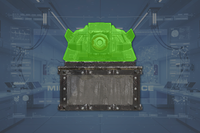
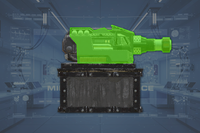
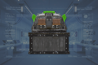
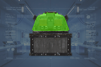
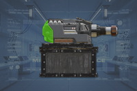

“
迫击炮台 是一个 可选目标 contained within an 机器人 outpost. It attempts to shoot at enemy targets within 射程. To 完成 the 目标, 绝地潜兵 must 摧毁 the Mortar 炮台. It can spawn with 机器人构筑者, 弹药, and Samples 围绕它。
目标步骤
- 摧毁 机器人 迫击炮台.
- 绝地潜兵被允许呼叫…… NUX-223 Hellbomb to 摧毁 the Mortar 炮台.
- 或者任何…… Weapon with
 中型 穿透攻击或更高等级可以摧毁阵地的通风口，而任何
中型 穿透攻击或更高等级可以摧毁阵地的通风口，而任何  重型 穿透武器或…… 战略配备 can 摧毁 the 迫击炮台 对防御的任何部位。
重型 穿透武器或…… 战略配备 can 摧毁 the 迫击炮台 对防御的任何部位。
- 奖励：
 200 申购点 Slips &
200 申购点 Slips &  50 经验值.
50 经验值.
结构解析
| 部件名称 |
生命值1 |
护甲值2 |
位置 |
耐久2 |
主血量占比3 |
溢出上限4 |
构造5 |
致命 |
爆炸抗性6
|
| 主体 |
400 |
 重型 重型 |



|
100% |
- |
- |
无 |
是 |
0%
|
| 散热器 |
400 |
 中型 中型 |


|
100% |
100% |
是 |
无 |
是 |
0%
|
Disclaimer: 每个带数量的高亮部位 a 数量有各自的 生命值. 未标注数量的部位共享 生命值 pools.
1) 生命值标注为 标注为 "主体" 没有各自的 individual 生命值. All 造成伤害 to these parts is 转移到敌人的 主生命值 pool.
2) 请参阅 护甲 values and enemy 耐久度 as defined in
伤害 for more information.
3) 造成伤害 to a part will also be 部分或全部转移 in full to 主生命值. 若设置为 0%, 否 伤害 is transferred.
4) 若设置为 "是", 伤害 transferred 对主血量 is capped by the combined 生命值 and 构造 of the part.
5) 构造 充当 a secondary 生命池 that, 一旦主体或肢体 生命值 has been depleted, 可能会衰减. The first number is the total 构造 and the second is the 衰退速率. 若设置为 0/s 不会衰减 and the 构造 作为额外 生命值.
6) 爆炸抗性 means 爆炸 伤害抗性, and can 射程 from 0 to 100%. 若设置为 100%, the limb cannot take 爆炸伤害; The 爆炸伤害 will instead 目标 主体. 请参阅
伤害 for more information.
- Note: This 机械师, known as Affected By 爆炸 can only occur once per 爆炸, 无论 100% 爆炸抗性 parts hit, and the 爆炸's 护甲穿透 must match or exceed 主体护甲 to deal 伤害 对主血量. However, 如果相同 爆炸 has already damaged 主体, this 机械师 will not trigger.
武器配置
战术信息
- the 迫击炮台 will only 火焰 at enemy targets if they have been spotted by other 机器人
- Additionally a 迫击炮台 will only 火焰 on those within 150m but can't see targets closer than 20m.
- When a 迫击炮台 is firing at you, 任务 控制 will warn you with a voiceline: "警告: you are in 射程 of enemy 大炮!"
- The 迫击炮弹 comes with bright red trails when traveling in the air. 玩家 can look to the sky to determine the 方向 and 位置 of the 迫击炮台.
- The majority of the 迫击炮台 is covered in 重型 护甲, while having 中型 weakspots on the back, therefore any 重型 穿甲武器，例如…… AC-8 机炮 和 LAS-98 激光大炮 可以从任何角度远程摧毁它们，而无需呼叫 NUX-223 Hellbomb.
- 武器 with 中型 穿透攻击仍然可以击杀…… 迫击炮台 from 射程. However, because this can only 伤害 them from the back, the 绝地潜兵 will have to circle around to the 正确 position. This is most easily performed when the 迫击炮台 is shooting at a teammate, as every 阵地 will be facing in the same 方向 without turning erratically.
- 只有……的武器 重型 穿透 should also try to 目标 the weakspots as they inflict their full 伤害 on them leading to a far quicker kill with less 弹药 expended. This is especially true for 武器 that have shrapnel, as shrapnel has 中型 穿透攻击，通常可以一击摧毁。
- Damaging 榴弹 that have 重型 or above can 摧毁 迫击炮台.
- 铝热弹 可以1-shot 迫击炮台 如果它粘在上面
- 两者 G-12 High 爆炸 和 TED-63 Dynamite can also 1-shot 迫击炮台 but requires them to 引爆 very close to the 建筑, 通常 by cooking the 手榴弹 and throwing it so it explodes in the air.
- Mortar 炮台 can also be destroyed by any of the 进攻型 战略配备, 阵地 战略配备, as well as the MD-17 反坦克地雷 如果手持武器不是可行选项，或为了节省弹药。
琐事
- Completing the 妥协 机器人 Defenses 可选目标 disables the 迫击炮台, preventing them from firing. However, to truly 完成 this 可选目标 and get the 奖励, 绝地潜兵 must 摧毁 the Mortar 炮台.
变更历史
Change
- Added a 中型 有护甲 弱点 to the vents on the backside of the 迫击炮台.
 The 光能者
The 光能者 超级地球 联邦
超级地球 联邦 超级地球 联邦